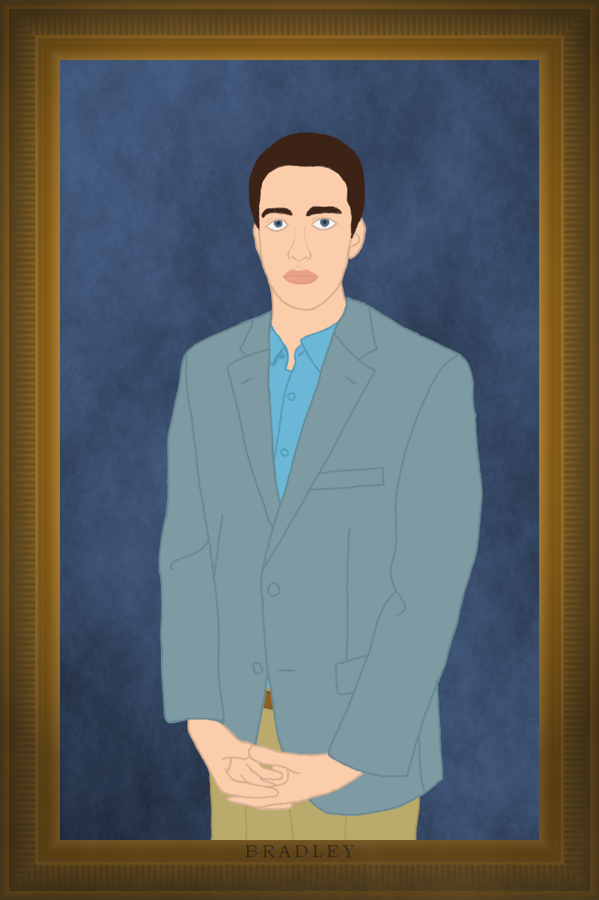

About Me
The name is Davis, Bradley L. Davis. I like building satellites and robots, watching movies, playing boards games, and cooking. I sometimes take photos and videos, as well.
Currently at Washington State University, Go Cougs!, I am studying Electrical Engineering. My portfolio contains many circuits boards mainly for CougSat-1. It is a nanosatellite I am leading the engineering efforts for in WSU’s Cougs in Space. The electronics work is mainly embedded microcontroller systems with occasional radio frequency components. Part of my role in the club is providing systems engineering to manage the vast complexities that is a satellite.
I am also a software engineer. With building microcontroller systems, comes the obligatory software. I often help design, implement, test, and review this code. The most exciting software I have written (and still am writing) for Cougs in Space is the software defined radio. At my internship at Schweitzer Engineering Laboratories, I created gigabit ethernet burden software as well as many automation scripts.
Many years ago, I participate in FIRST Robotics Challenge in which I led a team of mechanical designers and CADers to create a human-sized robot in less than six weeks. The programmers, electricians, machinist, and fabricates wanted to have a couple weeks to do their thing; furthermore, high school has a thing called “homework” and “sleep”, so actual design duration was much shorter. If you want to check out my professional work or club contributions, head over to my portfolio. For my personal projects, visit my laboratories.
Outside of class, work, and projects, I enjoy spending time with my friends. With that comes watching countless movies, binging series, baking and indulging in chocolaty goods, and playing games. Ooh, and cooking. From tator tot casserole to smoked salmon to mac and cheese with Cougar Gold, I make it all. When I have time, traveling is fun too.
My main drive for life is my continued exploration of valuable knowledge, exciting experiences, and innovative ideas. In every activity, I push the boundaries of myself and the topic.